Fender Pro Reverb
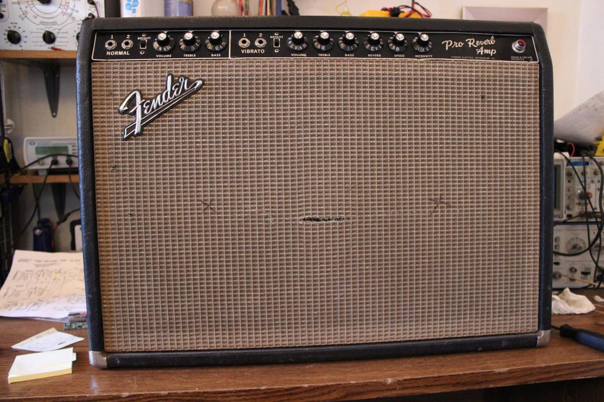
This amplifier came to me with a loud hum and a very distorted output. After the repair, I talked to the owner and we decided to add an option to remove the negative feedback loop using the ground switch that was no longer needed. I was very happy with how the amp turned out and would recommend this mod to anyone with an unused ground switch.
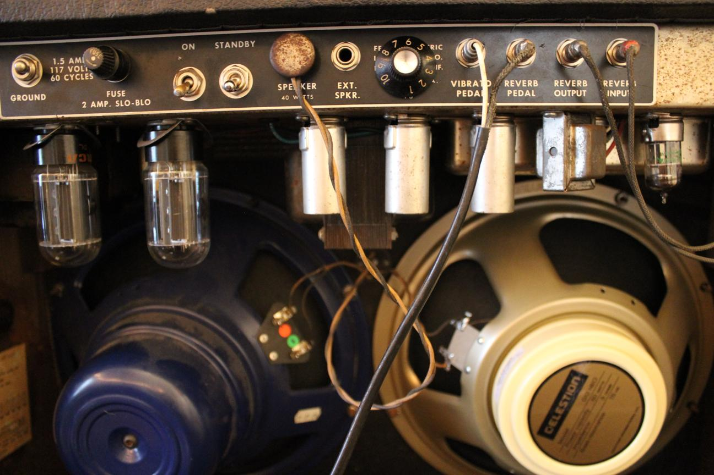
Before removing the chassis, I noticed that the amp had a knob on the back which I initially thought would be a mid range knob added to the tone stack. It turned out to be something else.
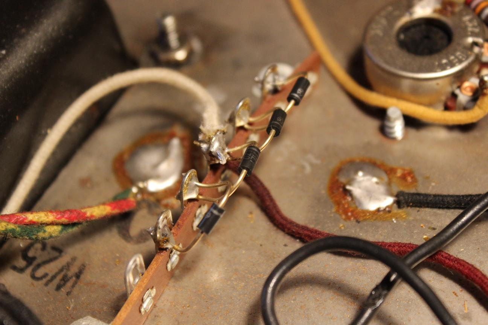
The amp had lots of visible repair and modification history. It looks like the amp was at one point converted to solid state rectification and then converted back. The terminal strip and diodes were left in place -an easy job if anyone ever wanted to switch back.
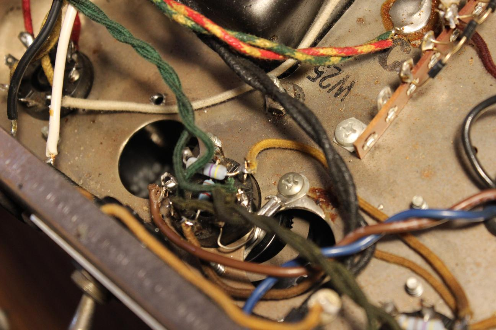
The plate and grid resistors in the power amp were replaced with modern components. I also noticed that the chassis had 2 more socket holes punched out. Maybe it had been converted to a quad tube power section at some point like a twin reverb.
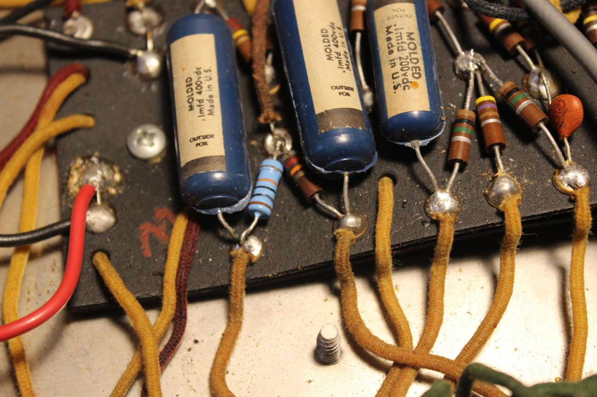
I always check the phase inverter resistors if I have the chassis out of the cabinet and this time I found a 100 kΩ that was out of spec. I replaced it with a modern metal film resistor.
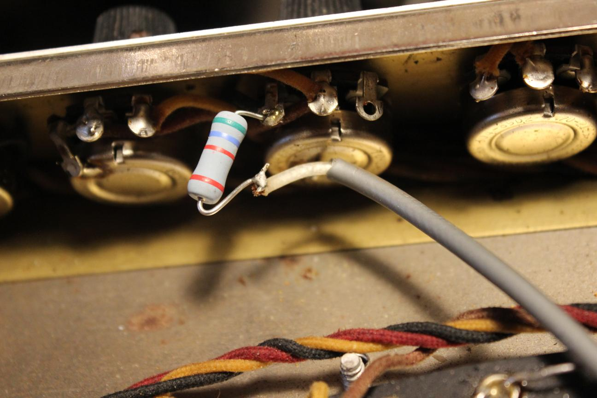
Here is where the knob on the back of the amp leads. A 5.6 kΩ resistor is connected in series to a 10 kΩ pot to vary the resistance to ground in the bass filter section. I imagine the idea is to change the cutoff frequency but I had a hard time hearing an effect on the tone.
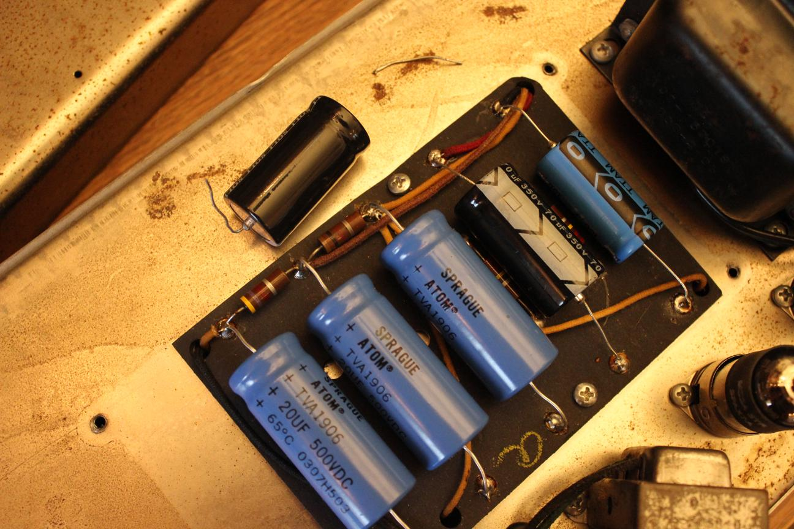
I noticed that the amp had low B+ voltage so I went straight to the power supply. I found that the first of the series caps had a leg disconnected internally. Super wierd. It fell right out when I removed it. I replaced it with a 100 μF at 350 V and the amp sounded great.
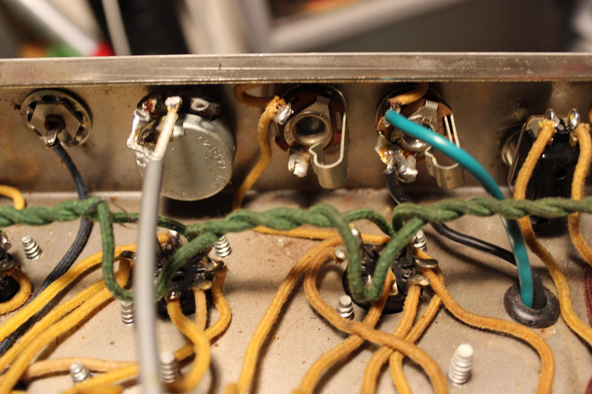
The idea of this mod is to take the 820 Ω resistor that provides negative feedback to the amp, and allow it to be disconnected through the available ground switch. The feedback softens the highs and attenuates the overall volume of the amp. Removing it gives more bite to the tone and allows for more breakup at lower volumes. The feedback comes through a wire connected to the external speaker which is a perfect place to break the loop with the switch.
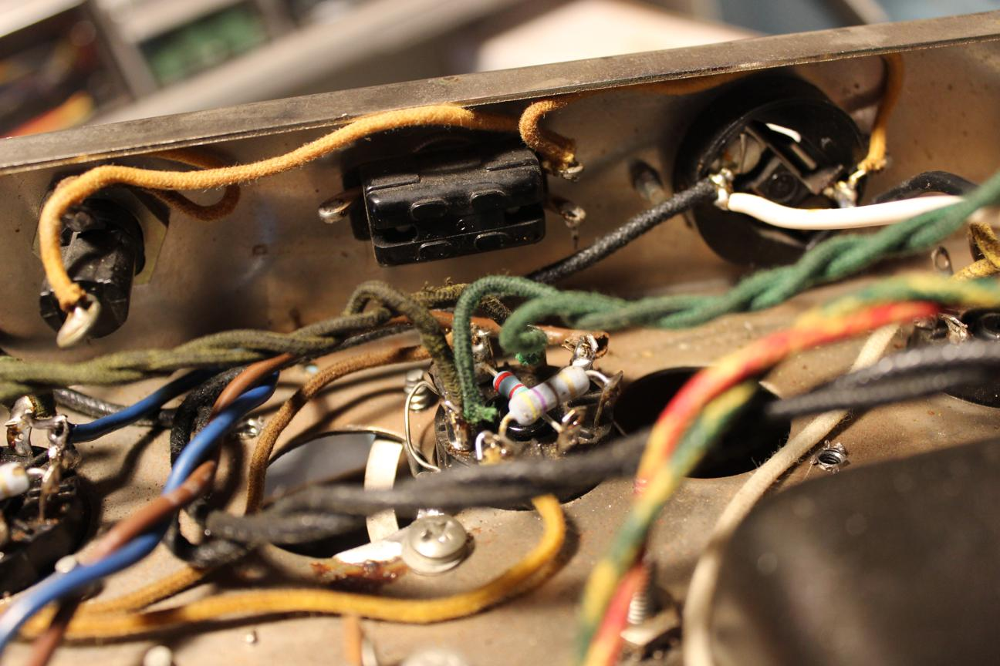
Since the amp was already converted to a 3 prong cord, the ground switch is doing nothing in the circuit.
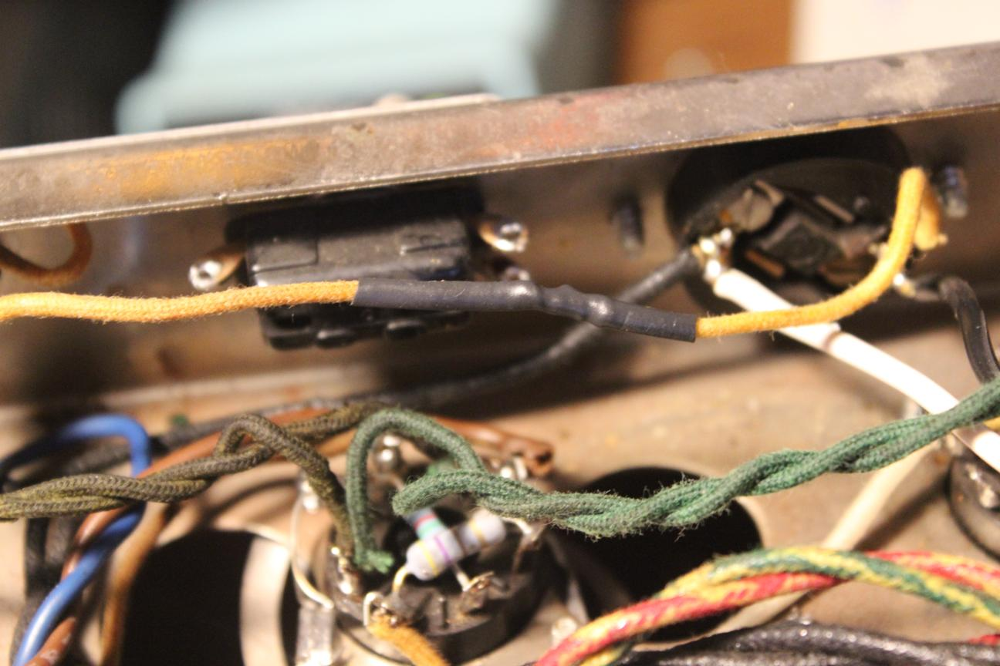
I spliced the AC line connected to the switch to free it up.
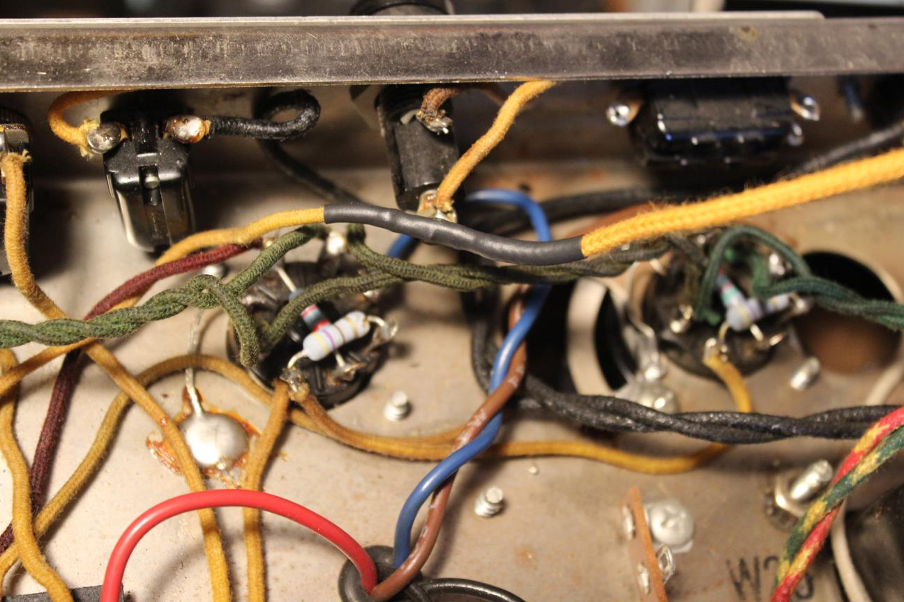
Here the loop wire is extended to reach the switch. I matched the original wire with some modern cloth covered wire.
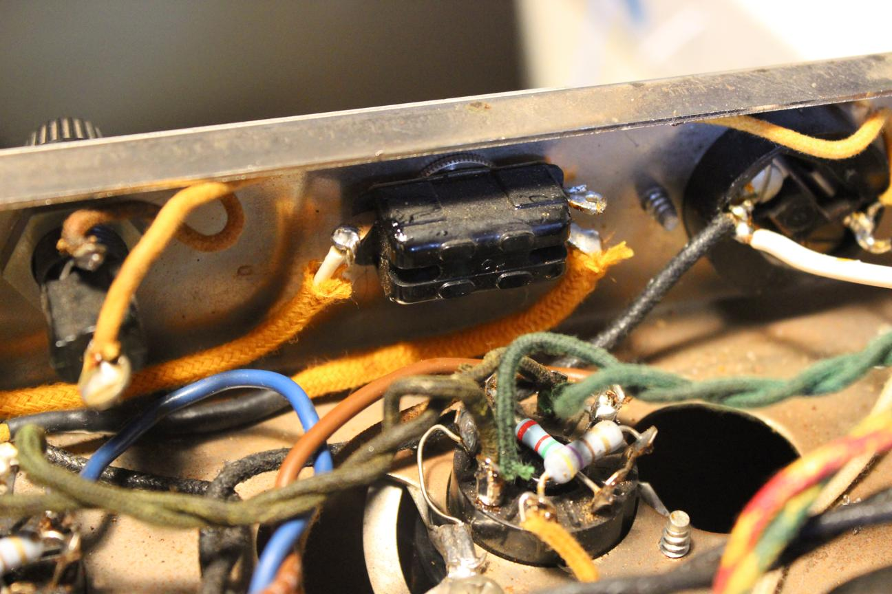
Connections to the switch
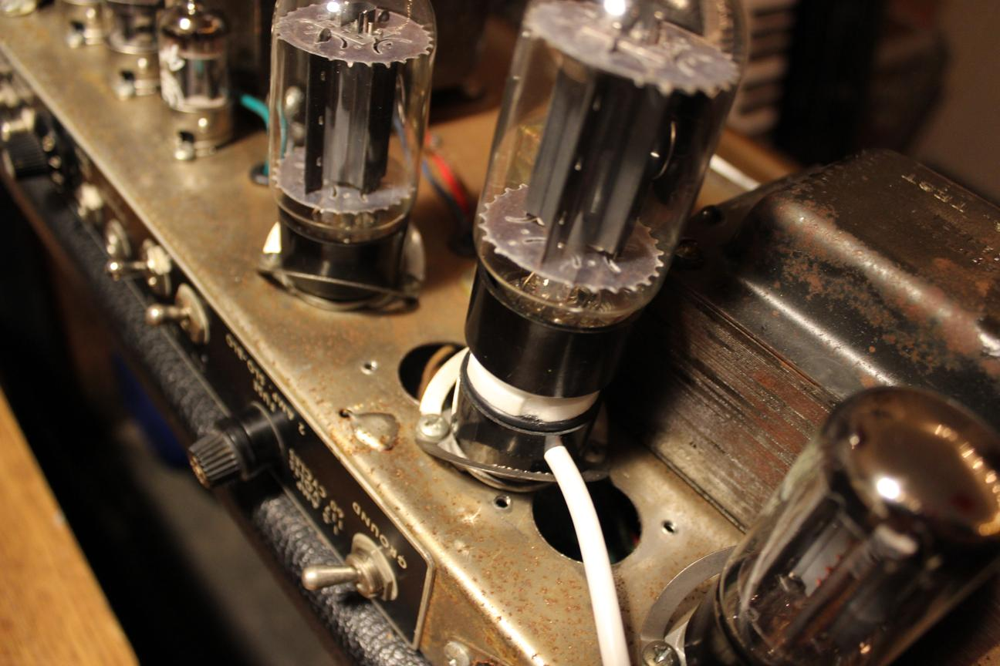
The last thing to do was bias the amp. I used a plate current probe and got the tubes around 14 Watts.
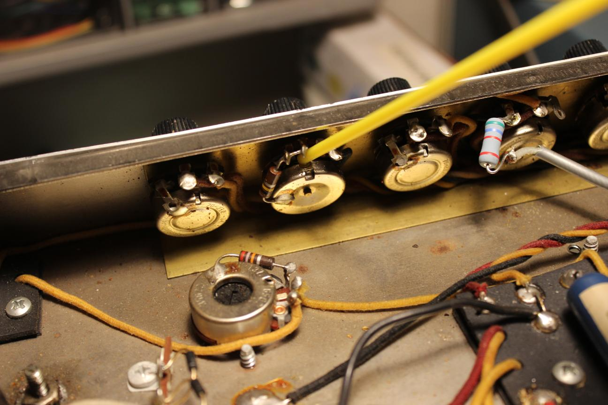
Cleaning pots and switches before re-assembly
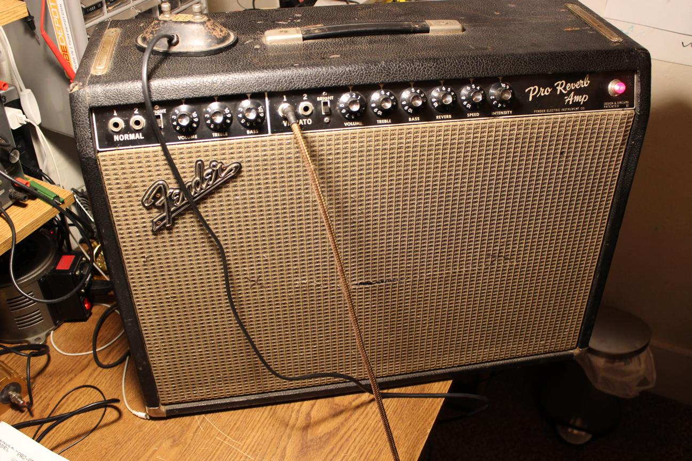
Testing it out. I really love the tone of an amp without the feedback loop. You can get a much more aggressive sound. Plus, the mod is quick and minimally invasive because the parts are already in the amp (minus some wire).